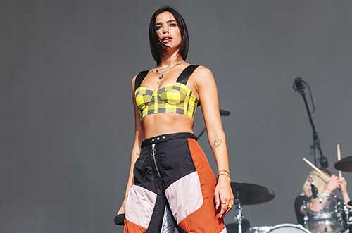
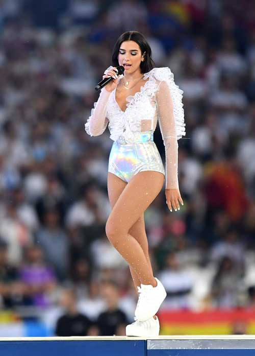

Dua Lipa nació en Londres, Inglaterra el 22 de agosto de 1995. Es una cantante, compositora y modelo británica de origen albanokosovar. Su carrera musical se inició a los 14 años, cuando comenzó a versionar canciones de otros artistas en YouTube. En 2015 firmó con la discográfica Warner Music Group y a los 20 años lanzó su primer sencillo "Be the One". En enero de 2017 Lipa ganó el premio a la elección pública EBBA.1 Su homónimo álbum de estudio debut se lanzó el 2 de junio de 2017. El álbum generó siete sencillos, incluidos dos top 10 del Reino Unido "Be the One" y "IDGAF" y el sencillo número uno del Reino Unido "New Rules", que también alcanzó el número seis en los Estados Unidos. En febrero de 2018, Lipa ganó dos premios Brit por la solista británica y a la mayor irrupción musical británica. En abril, el sencillo "One Kiss" de Lipa y Calvin Harris alcanzó el número uno en el UK Singles Chart. En febrero del 2019, fue galardonada como mejor nuevo artista por los Premios Grammy, y su colaboración en Electricity con Mark Ronson y Dj Diplo recibió el galardón de mejor grabación de Dance.
A pesar de haber crecido escuchando las obras de artistas como David Bowie y Bob Dylan que su padre tocaba en casa, afirma que Nelly Furtado y Pink son algunas de sus mayores inspiraciones musicales, de las que se aficionó profundamente cuando era tan solo una niña.1110 Whoa, Nelly! de Furtado y M!ssundaztood de Pink fueron los dos primeros álbumes que obtuvo y al principio le encantaban porque eran «divertidos para cantar»,11aunque recientemente, en una entrevista que concedió a RPass Live, reveló que como un ritual, ella y su banda siempre escuchan a Katy Perry y Kendrick Lamar, antes de subir a un escenario,72 en donde "Last Friday Night (T.G.I.F.)", "Teenage Dream" y "California Gurls" son las canciones de Katy que frecuentemente escucha, además de «Humble» y «DNA» de Kendrick;72 e indicó que mientras crecía, empezó a prestar mucho más atención a las letras de las canciones y estas empezaron a tener más importancia para ella. Luego en su adolescencia, durante su estadía en Kosovo, comenzó a inspirarse en la música rap, y se considera una gran entusiasta de J. Cole, Kendrick Lamar, Chance the Rapper y Schoolboy Q.
